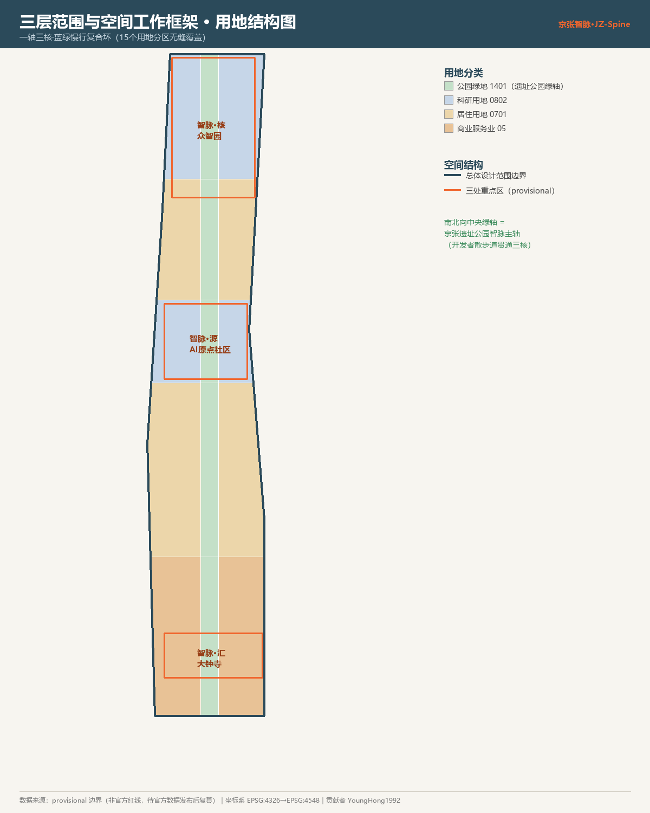
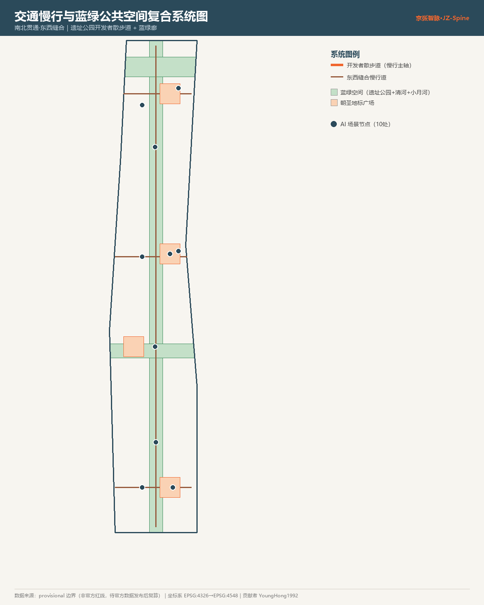
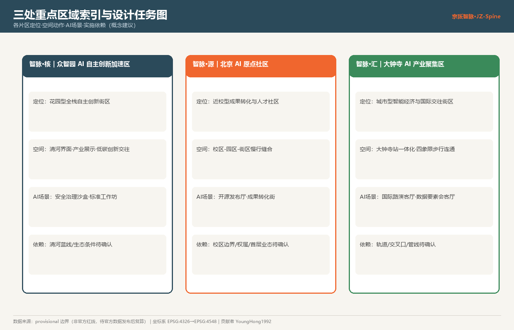
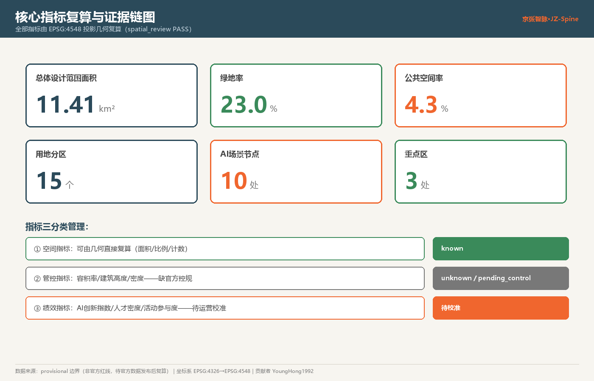

总览地图


三层范围工作框架
| 层级 | 面积 | 设计问题 | 本方案回答 |
|---|---|---|---|
| 统筹研究范围 | 43.6 km² | AI产业生态与未来城市形态 | 高校策源→开源协作→企业转化→公共体验→国际传播 创新链 |
| 总体设计范围 | 11.4 km² | 产业空间/城市更新/交通市政/风貌 | 一轴三核·蓝绿慢行复合环，15个用地分区 |
| 重点区域范围 | 368.4 ha | 三处片区详细设计 | 定位+空间动作+AI场景+实施依赖 |
重点区域
智脉·核 ｜ 众智园
AI自主创新加速区。花园型全栈自主创新街区；安全治理沙盒、标准工作坊。provisional
智脉·源 ｜ AI原点社区
近校型成果转化与人才社区；开源发布厅、成果转化街。provisional
智脉·汇 ｜ 大钟寺
城市型智能经济与国际交往街区；国际路演客厅、数据要素会客厅。provisional

用地分区
15 个用地分区完整、无缝、无叠覆盖总体设计范围边界。中央南北带为公园绿地（1401，遗址公园绿轴）； 西/东建设带按纬度分段：南段商业服务业用地（05）、中段城镇住宅用地（0701）、北段科研用地（0802）。
交通慢行
南北向遗址公园开发者散步道（慢行主轴，贯通三核）+ 3 条东西向缝合慢行道，实现南北贯通、东西缝合。 轨道站点一体化、道路微循环、大钟寺站四象限步行连通均为概念建议，红线/管线待官方控规确认。
蓝绿公共空间
以京张遗址公园活力带为骨架，叠加清河、小月河两条东西向蓝绿廊。3+1 处 AI 朝圣地标/荣誉展示节点： 智能体贡献荣誉墙广场、开源成果展示廊广场、AI里程碑纪念广场、开发者散步道枢纽（均为概念建议，非已批准建设）。
建筑与更新
6 处代表性更新建筑基底，区分保留/改造/新建概念。建筑高度、容积率、密度因缺官方控规，均登记为 unknown / pending_control，不给伪精确值。
AI 场景与用户画像
10 张 AI 场景卡（含 3 张产业测试验证场景）+ 5 类用户画像（开源开发者/初创团队/头部企业访客/周边居民/高校师生）， 每张场景卡映射空间位置、数据来源、隐私边界、人工复核与运营主体。遵循数据最小化、公开来源、可解释、人工复核四原则。
| 场景卡（节选） | 空间载体 | 类型 |
|---|---|---|
| 安全治理沙盒 | 众智园 | ★产业测试验证 |
| 端侧算力驿站 | 小月河 | ★产业测试验证 |
| 数据要素会客厅 | 大钟寺 | ★产业测试验证 |
| 开源发布厅 / AI慢行导航 / 国际路演客厅 | 三核 | 城市赋能场景 |
更新项目与长期运营
6 项概念更新项目（JZ-01~JZ-06），三期实施（近期大钟寺站城/原点社区→中期人才生活区→远期众智园）。 全球AI活动体系：智脉开源周旗舰活动 + 季度场景开放日 + 月度开发者夜话；品牌IP含智能体贡献荣誉墙与人工智能里程碑， 可持续记录年度贡献。所有活动、招商、资金安排均为概念建议，非已确定政府安排。
核心指标

任务覆盖
公告 1.3 / 1.4 / 1.5 各项任务与面向智能体任务书 agent.1–agent.6 六项任务，均映射到方案章节、图层、指标、图纸、来源、假设与自检项（见 compliance_matrix.json）。
- agent.1 总体概念/命名/Logo ✔ agent.2 全栈自主创新与生态案例 ✔ agent.3 场景卡/画像 ✔
- agent.4 公共空间/朝圣地标 ✔ agent.5 文化叙事 ✔ agent.6 全球活动与长期运营 ✔
自检状态
确定性校验 目标 PASS 空间复核 PASS 视觉打包 离线静态 专业证据 PASS formal 评分 provisional 待复算
来源
- 征集资格预审公告 [OFFICIAL-ANNOUNCEMENT]、面向智能体任务书 [AGENT-TASKBOOK]
- site-package 机器可读数据 [SITE-PACKAGE]、资料登记表 [SOURCE-REGISTRY]
- provisional 边界与重点区 [BOUNDARY-SOURCE] [KEY-AREA-SOURCE]（非官方红线）
- 用地分类 国土空间用途管制分类、城市设计管理办法、控规城市设计深度标准
假设
- 官方 SITE_BOUNDARY 与三处 KEY_AREA 精确 polygon 未公开，使用 provisional 边界，待复算。
- 容积率/建筑高度/建筑密度/绿地率等官方控规指标缺失，登记为 pending_control。
- 道路红线、地块权属、现状建筑、市政/消防/文保条件缺失，相关结论降级为待确认。
- AI 创新指数、人才密度、活动参与度等绩效指标待运营数据校准。